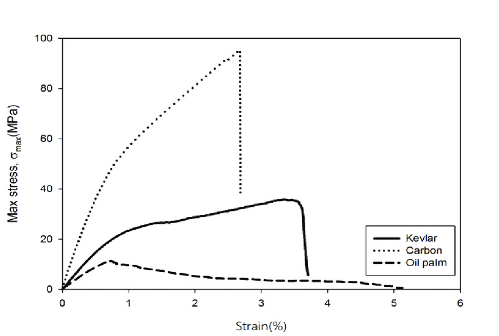

.png)
Abstract
This article examines the extensive evolution of Formula 1 safety standards and regulations, from their largely careless approach at conception in 1950 to the revolutionary introduction of the halo component in 2017, and the various safety adjustments made to this day. The progress made over the years has saved countless lives, for both spectators and drivers, with a total of 52 driver deaths in its 75-year history and only one tragic death in the last 2 decades, referring to Jules Bianchi’s incident in 2014 and passing in 2015, emphasising the immense advancement achieved.
Introduction
Formula 1 began in Britain in 1950, emerging from a period where safety standards across society were notably poor. Reported accidents under the Factories Act rose by 15 per cent between 1958 and 1961 (Sirrs C, 2024), and in the wake of two world wars, public sensitivity to danger was low; exposure to violence can cause people to become “numb” to it (Huesmann, L. R, Et al ,2023). Auto racing, therefore, operated with little scrutiny. This article aims to catalogue and explain the changes that transformed Formula 1 safety and influenced motorsport as a whole.
The Beginning: What was the standard of safety in early Formula 1?
Formula 1’s early decades were marked by extreme danger. Cars prioritised speed over protection, medical provisions were minimal, and fatal accidents were frequent, pushing the sport toward eventual regulatory reform (F1’s Road to Safety: How Regulations Shape Modern Racing, 2025). Drivers typically wore everyday clothes; Stirling Moss’s overalls and Fangio’s polo shirts, work jackets and slacks typified the era (Parkin, C, 2025). Headwear was not initially mandatory. In 1950, drivers wore cloth caps and goggles, offering little more than wind protection, before cork helmets became compulsory in 1952 (Duxbury A, 2022). Although an improvement, these helmets barely absorbed impact. Marshals existed from the beginning, and these unpaid volunteers were essential (Duxbury A, 2022). Yet early procedures were vague, leading marshals to step onto live tracks and set up or repair barriers mid-race. The barriers themselves were crude: hay bales, oil drums, even trees lining the course. Whether these objects could absorb the energy of a car travelling 180 mph or more was rarely considered.
Helmet Development: How has technological advancement improved the protectivity qualities of headwear?
Despite their importance today, helmet innovation began slowly. A significant step came with the Bell 500 TX in 1954 — the first purpose-built racing helmet. Made from glassfibre laminate and certified by the newly founded Snell Memorial Foundation, it set a new standard following the fatal accident of William Pete Snell in 1957 (Hughes, E, 2022). Progress accelerated thereafter. Visors were added, and Dan Gurney introduced the first full-face helmet in 1968. From the late 1970s, Kevlar composite shells improved strength and reduced weight. By 2001, multilayer carbon fibre helmets became the norm, offering enormous gains: around 30% better penetration resistance and 70% better energy absorption than Kevlar, while reducing strain on a driver’s neck under high g-forces (Formula 1 helmets: How F1 helmet technology has evolved over seven decades, 2024). This is clearly shown in stress–strain comparisons between carbon fibre, Kevlar, and oil palm as a control (Jawaid M, 2017).
The Race-Suit: How the development of anti-flame textile revolutionised fire safety
Fire was once one of Formula 1’s most terrifying hazards. In the 1950s and 1960s, drivers wore cotton garments that ignited quickly, contributing to fatalities such as Lorenzo Bandini in 1967 and Jo Schlesser in 1968. These tragedies prompted the adoption of fire-resistant clothing (Parkin, C, 2025). A breakthrough came with Nomex, created by DuPont in 1963. Its resistance to ignition and melting enabled suits that could withstand intense heat for several seconds (Nomex®: Uses, Properties, and Safety Information, 2025). By the end of the decade, Nomex suits became mandatory, marking one of the earliest systematic improvements in driver protection. Race suits then evolved into multi-layered protective systems. Early single-layer suits offered limited resistance, but by the 1980s, multi-layer Nomex and Kevlar suits could withstand temperatures over 800°C for more than 12 seconds while remaining lightweight. Modern suits, weighing around one kilogram, are tested under FIA 8856-2018 standards, ensuring they resist flames, tearing and heat transmission (Regulations Federation Internationale de l’Automobile, 2025). Accessories such as gloves, balaclavas, boots and underwear complete the system. Their effectiveness was demonstrated dramatically in Romain Grosjean’s 2020 Bahrain crash, where he survived nearly half a minute in flames with relatively minor injuries. Today’s race suits reflect more than half a century of innovation, transforming from basic overalls into essential, high-performance safety equipment.
The monocoque and survival cell: How to transform a car into a fortress
As Formula 1 cars grew faster from the 1970s onward, improving structural protection became essential. Early aluminium chassis lacked strength and frequently collapsed in crashes. A major leap came with McLaren’s MP4/1 in 1981, which introduced the first carbon fibre monocoque (The evolution and construction of monocoque chassis in motorsport, 2024). Carbon fibre combined low weight with exceptional rigidity, creating a protective shell that absorbed energy rather than transmitting it to the driver. This concept evolved into today’s survival cell: a reinforced carbon fibre capsule housing the driver, fuel tank and critical systems. It must pass FIA crash tests that simulate forces exceeding 50g (2025 FORMULA 1 TECHNICAL REGULATIONS, 2024), ensuring its integrity under extreme loads. Protection was further strengthened by the halo, introduced in 2018 following extensive analysis. Constructed from titanium and able to withstand over 12 tonnes of force (F1 Halo strong enough to hold a bus, say Mercedes, 2018), the halo shields drivers from debris, tyres and barriers, dangers that previously caused multiple fatalities. Its value was proven immediately in incidents such as Charles Leclerc’s Spa 2018 crash and Romain Grosjean’s 2020 accident, where both the halo and monocoque preserved the cockpit despite violent impacts and fire. Together, the monocoque and halo form the core of modern Formula 1 safety: a carbon-fibre survival cell reinforced with titanium, capable of protecting drivers in scenarios once considered unsurvivable. (F1 Tech Tuesday: A close look at the halo, 2021)

Conclusion
From cloth caps and haybales to carbon fibre monocoques and titanium halos, Formula 1’s safety evolution has been driven by relentless innovation and hard lessons. Every major advancement: helmets, fireproof suits, crash structures and medical improvements; reflects a commitment to learning from tragedy and prioritising driver welfare. Today’s Formula 1 represents a pinnacle of engineering, where athletes race at over 200 mph with a level of protection unimaginable in the sport’s early decades.
References
Sirrs, C. (2024) Accidents and Apathy: The Construction of the ‘Robens Philosophy’ of Occupational Safety and Health Regulation in Britain, 1961-1974, Social history of medicine : the journal of the Society for the Social History of Medicine. U.S. National Library of Medicine. Available at: https://pmc.ncbi.nlm.nih.gov/articles/PMC4743682/#ref-list1 (Accessed: 30 October 2025). Huesmann, L. R., Dubow, E. F., Boxer, P., Smith, C., Shikaki, K., Landau, S. F. and Gvirsman, S. D. (2023) Consequences of Exposure to War Violence: Discriminating Those with Heightened Risk for Aggression from Those with Heightened Risk for Post-Traumatic Stress Symptoms, International journal of environmental research and public health. U.S. National Library of Medicine. Available at: https://pmc.ncbi.nlm.nih.gov/articles/PMC10298111/ (Accessed: 30 October 2025). F1’s Road to Safety: How Regulations Shape Modern Racing (2025) Pitpass. Available at: https://www.pitpass.com/79757/F1s-Road-to-Safety-How-Regulations-Shape-Modern-Racing#:~:text=Formula%201%20racing%20has%20always,every%20aspect%20of%20Formula%201. (Accessed: 30 October 2025). Parkin, C. (2025) This is how F1 race suits have evolved over the years, Red Bull. Red Bull. Available at: https://www.redbull.com/gb-en/an-illustrated-guide-to-the-evolution-of-F1-race-suits (Accessed: 30 October 2025). Duxbury, A (2022) History of safety devices in Formula 1: The halo, barriers & more. Available at: https://www.autosport.com/f1/news/history-of-safety-devices-in-formula-1-the-halo-barriers-more-4982360/4982360/ (Accessed: 30 October 2025) Hughes, E. (2022) The intriguing evolution of Formula 1 helmets, Magneto. Available at: https://www.magnetomagazine.com/articles/the-intriguing-evolution-of-formula-1-helmets/ (Accessed: 30 October 2025). Formula 1 helmets: How F1 helmet technology has evolved over seven decades (2024) Raceteq. Available at: https://www.raceteq.com/articles/2024/11/formula-1-helmets-how-f1-helmet-technology-has-evolved (Accessed: 30 October 2025). Jawaid, M (2017). Available at: https://www.researchgate.net/figure/The-tensile-stress-strain-curve-of-Kevlar-and-carbon-hybrid-with-oil-palm-EFB-epoxy_fig1_321534692 (Accessed: 30 October 2025). Nomex®: Uses, Properties, and Safety Information (2025) Flash Wildfire Services. Available at: https://www.flashwildfireservices.ca/blogs/news/nomex-aramid-fiber-guide?srsltid=AfmBOoo0PDc9li0n8gA08d-UAl-zdAXJu2eA6qwJE0TNumBbEuiJMmPm (Accessed: 30 October 2025). Regulations (2025) Federation Internationale de l’Automobile. Available at: https://www.fia.com/regulation/category/761 (Accessed: 30 October 2025). The evolution and construction of monocoque chassis in motorsport (2024) Raceteq. Available at: https://www.raceteq.com/articles/2024/08/evolution-and-construction-of-chassis (Accessed: 30 October 2025). 2025 FORMULA 1 TECHNICAL REGULATIONS (2024). Available at: https://www.fia.com/sites/default/files/fia_2025_formula_1_technical_regulations_-_issue_01_-_2024-12-11_1.pdf (Accessed: 30 October 2025). F1 (2018) Halo strong enough to hold a bus, say Mercedes, F1 - The Official Home of Formula 1® Racing. Formula 1. Available at: https://www.formula1.com/en/latest/article/f1-halo-strength-bus.51zS5jAngIIy6okOkUKmso (Accessed: 30 October 2025). F1 (2021) TECH TUESDAY: A close look at the halo – and how it ‘saved Hamilton’s neck’ in Monza crash, Formula 1®. Formula 1. Available at: https://www.formula1.com/en/latest/article/tech-tuesday-a-close-look-at-the-halo-and-how-it-saved-hamiltons-neck-in.68Ajvw12Xza2P3JvuXGRO3 (Accessed: 4 December 2025).